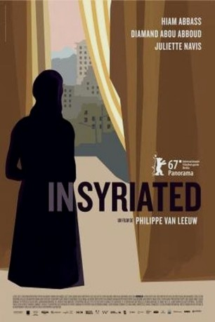

#7665 Innen Leben
Alternativ: In Syria (Englischer Titel)
 
 IMDB-Wertung: 7.0 / 10
IMDB-Wertung: 7.0 / 10  Metascore: 0
Metascore: 0 
Trapped inside her house in a city under siege, a mother of three turns her flat into a safe harbour for her family and neighbours in an attempt to protect them from the war raging on the streets of Damascus, in the latest from Philippe Van Leeuw (The Life of Jesus).
Jahr: 2017
Dauer: 86 Minuten
FSK: 12
Land: Belgien Studio: Weltkino FilmverleihTonspuren:
Untertitel:
Auflösung: 1080p (1920x1080) Größe: 3543 MB
Genre: Drama, Krieg
Regisseur: Philippe Van Leeuw
Drehbuch: Philippe Van Leeuw
Soundtrack:
Darsteller:
 Hiam Abbass als Oum Yazan
Hiam Abbass als Oum Yazan- Diamand Bou Abboud als Halima
- Elias Khatter als Karim
- Juliette Navis als Delhani
- Mohsen Abbas als Abou Monzer
- Moustapha Al Kar als Samir
- Alissar Kaghadou als Yara
- Ninar Halabi als Aliya
- Mohammad Jihad Sleik als Yazan
- Issan Dib als Le premier brancardier
- Orwa Khultum als Le deuxième homme
- Madjd Tarabay als Halima and Samir's baby
Datei: X:\2017(G-M)\Innen Leben (2017, FSK12, 1920x1080).mkv seit 29.11.2017
Festplatte: HD 2017(A-Z)-2018(A-F)
 Es gibt insgesamt 148 Filme in der Gruppe '2017(G-M)'
Es gibt insgesamt 148 Filme in der Gruppe '2017(G-M)'